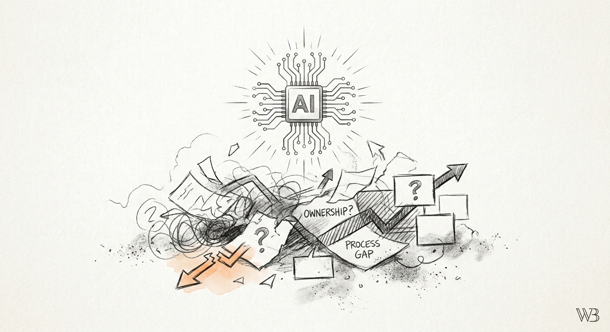

Drafted: 2026-07-06
OS Pillar: Operating Model OS
Quarterly Theme: Systems That Serve
Subject: Por qué su piloto de IA dejó de funcionar en el tercer mes
Preheader: La tecnología funcionó. El proceso sin documentar, no.
Resumen del Insight: Las empresas medianas están contratando IA para resolver problemas de eficiencia, pero las herramientas fracasan porque los procesos sobre los que aterrizan, con derechos de decisión ambiguos, entregas manuales e información aislada, nunca fueron rediseñados primero.
Esta semana: la IA entra a las empresas más rápido que los procesos que debería operar.
Las pequeñas empresas pagan hoy una mediana de 21 dólares por empleado en herramientas de inteligencia artificial, casi el doble de los 11 dólares que gastan las compañías de todos los tamaños en promedio, según Business Insider. La cifra parece una prima por adoptar temprano. No lo es. Es lo que cuesta meter automatización en procesos que nadie se molestó en documentar. Una empresa grande absorbe ese sobreprecio. Un operador de entre 5 y 100 millones de dólares no. Cada peso invertido en una herramienta que cae sobre un flujo sin documentar compra el mismo resultado: confusión más rápida, error de mejor apariencia y una factura que el dueño no vio venir al cierre del trimestre.
Usted compró la herramienta de IA. Su equipo la usó un mes, quizás dos. El piloto empezó a perder tracción. El atajo manual regresó. La factura siguió llegando. Seis meses después, en silencio, se pregunta si la tecnología estaba sobrevaluada, si su equipo quedó rezagado o si se adelantó demasiado.
El diagnóstico no es ninguno de esos.
La herramienta no falló porque fuera mala tecnología. Falló porque cayó sobre un proceso que nadie había escrito. Sin dueño. Sin acuerdo claro entre quien inicia el trabajo y quien lo cierra. Sin definición de qué significa "listo". La herramienta hizo exactamente lo que estaba diseñada para hacer: aceleró el flujo sobre el que cayó. Y ese flujo era invisible.
El giro que a la mayoría se le escapa es este. La IA no corrige un modelo operativo. Lo amplifica. Si el proceso está documentado, tiene dueño y define sus entregas, la herramienta comprime tiempo. Si el proceso vive en la cabeza de tres personas, la herramienta multiplica la ambigüedad. Y la esconde detrás de un resultado que se ve más limpio.
El Operating Model OS arranca con una evidencia que el dueño tiene que confrontar en persona. No el hallazgo de un consultor. Los datos de la propia empresa. ¿Dónde se estancó la adopción de IA dentro de la organización? ¿Qué equipos regresaron al atajo manual y en cuánto tiempo? ¿Qué entregas siguen pasando por el correo del dueño? Esa evidencia es la conciencia que el dueño necesita sostener antes de que el equipo se muestre dispuesto a rediseñar el proceso. Sin ella, cada conversación de rediseño suena teórica. Cada empuje por documentar suena a burocracia impuesta desde arriba.
En la mayoría de las medianas empresas, la herramienta llega antes que el mapa del proceso. La demo del proveedor impresiona. El piloto se aprueba. Arranca el despliegue. En ningún punto de esa secuencia alguien escribe cómo se mueve realmente el trabajo. De marketing a operaciones. De ventas a entrega. De quien contesta la llamada a quien cumple el pedido. Lo que sigue es previsible: la herramienta se monta sobre un proceso que nadie posee, y la culpa recae sobre la adopción.
Esta semana, la acción es pequeña e incómoda. Elija la herramienta de IA que su equipo dejó de usar o está evadiendo en silencio. Saque los datos de cuándo se cayó la adopción. Y dibuje el proceso subyacente en una sola hoja: disparador, dueño, entrega, decisión, cierre. Si alguna de esas cinco casillas está vacía, ahí tiene el punto donde la herramienta iba a fracasar antes de instalarse. Corrija el proceso en papel primero. La herramienta viene después.
Sección: spotlight
Anthropic firmó un contrato de arrendamiento a 20 años con TeraWulf para un campus de infraestructura de IA construido a la medida en Hawesville, Kentucky. El sitio es una antigua fundidora de aluminio de Century Aluminum que TeraWulf adquirió a inicios de este año. Se espera que el acuerdo genere cerca de 19 mil millones de dólares en ingresos contratados durante el plazo inicial. La capacidad soportará alrededor de 400 megawatts de carga de IA, en una ciudad de mil habitantes.
Para el operador de la mediana empresa, la lectura es directa: la infraestructura de IA corre hoy sobre compromisos operativos de dos décadas, no sobre suscripciones trimestrales de software. Nuestra tesis es que el valor lo captura quien controla la capa operativa debajo del cómputo. Compra de energía. Protocolos de disponibilidad. Coordinación cruzada del sitio. En la mayoría de las medianas empresas mexicanas, esa capa operativa coincide con la disciplina que el dueño nunca plasmó dentro de sus cuatro paredes. El acuerdo de Kentucky recuerda que la herramienta siempre fue la parte fácil.
Enfoque México. La misma disciplina se exige del otro lado del mostrador. Un año después del caso FinCEN, la SHCP, Banxico y la CNBV endurecieron el escrutinio para autorizar nuevas licencias bancarias, incluidas fintechs y Sofipos, según El CEO. La gobernadora de Banxico, Victoria Rodríguez Ceja, señaló que las inspecciones han puesto la lupa sobre el modelo de calificación de riesgo. También sobre el diseño de escenarios de monitoreo más robustos.
Scribe. Herramienta de documentación de flujos de trabajo que genera guías paso a paso de forma automática mientras su equipo ejecuta una tarea en pantalla. Importa porque elimina la excusa más común para no documentar procesos: el tiempo que lleva escribirlos. Disponible en scribehow.com.
A vigilar esta semana: cuente cuántas veces alguien de su equipo pregunta cómo se ejecuta una tarea rutinaria, y cuántas veces consulta un proceso documentado. Registre la proporción durante cinco días hábiles. La diferencia entre esos dos números es el impuesto oculto que paga hoy por procesos sin documentar. Y es la misma factura que heredará su próxima inversión en IA.
Si algo de este número resonó contigo, respóndeme - leo cada mensaje.
Si le es útil a alguien en tu red, reenvíalo - es el mayor cumplido.
Cuando estés listo para trabajar juntos directamente, así es como empezamos: [link]
Draft generated by the pipeline. Review and edit before sending.